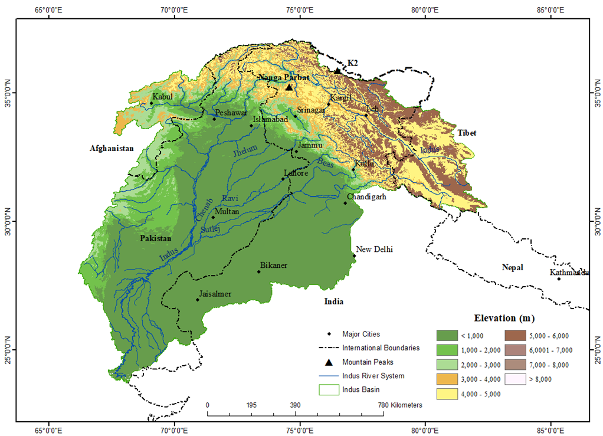

Doctoral research, 2024 to now
- 2026
Fluoride and spatial resolution
Deep learning benchmarks for India-wide fluoride prediction, with predictor stacks built at native, 500 m, 1 km and 5 km scales.
- 2026
Physically informed downscaling of satellite predictors
Downscaling and upscaling environmental predictors while preserving their physical meaning.
- 2025–26
Uranium in groundwater throughout India
National-scale AutoML prediction, risk classes, population exposure and groundwater governance indicators.
- 2024–25
Arsenic in the Middle Gangetic Plain
Distribution, speciation and controls on arsenic mobilisation; presented at As2024.
Earlier research
- 2023
Land surface temperature trends, Indus River Basin
Spatial and elevation-wise daytime and nighttime LST trends with Google Earth Engine, ArcGIS and trend analysis. Published in the Journal of Mountain Science.
- 2023
Permafrost in the Indus Basin
Identification and mapping from about twenty years of MAAT, PISR, BMAT, snow and precipitation estimates in Google Earth Engine.
- 2023
Snow cover and change in Indian basins

Postgraduate projects, MA Geography, 2021–2023
- Measuring the Problems and Emotions of Urban-Ward Migrants: A Case Study of Construction Workers in Delhi
- Monitoring the Effects of Light Pollution & Evaluating the Effectiveness of Indian Regulations
- Community Awareness, Participation, & CCDRR: Reflections from North-West India
- Experience of Migrant College Students During COVID-19 Pandemic
- Analyzing the Possibilities and Prospects of 24/7 Water Supply in Delhi, India
- Geography of Ramayana
- Digital Enhancement of Physical Space and Connective Turn in the Tourism Industry during and Post-COVID-19 Period
Undergraduate projects, BA Geography, 2018–2021
- Forest Monitoring & Urban Sprawl Analysis Using GIS in Delhi
- LULC Change Detection for 20 Years in South-West Delhi
- Social Indicators & Status Analysis of Jammu & Kashmir
- Socio-Economic Impact of COVID-19 in Delhi
- HRVC Analysis of Jim Corbett
- Studying Human Trafficking in Delhi through Remote Sensing
- Understanding Ansal Plaza Mall of South Delhi as a Gendered Landscape: A Temporal Study